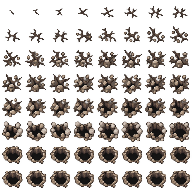

Loading art…
One cell · 24 × 24 px frames
The hole stays open until you reset this preview.
Step onto loose ground. A crack opens beneath your feet, then becomes a permanent hole after five seconds.
Loading art…
One cell · 24 × 24 px frames
The hole stays open until you reset this preview.
